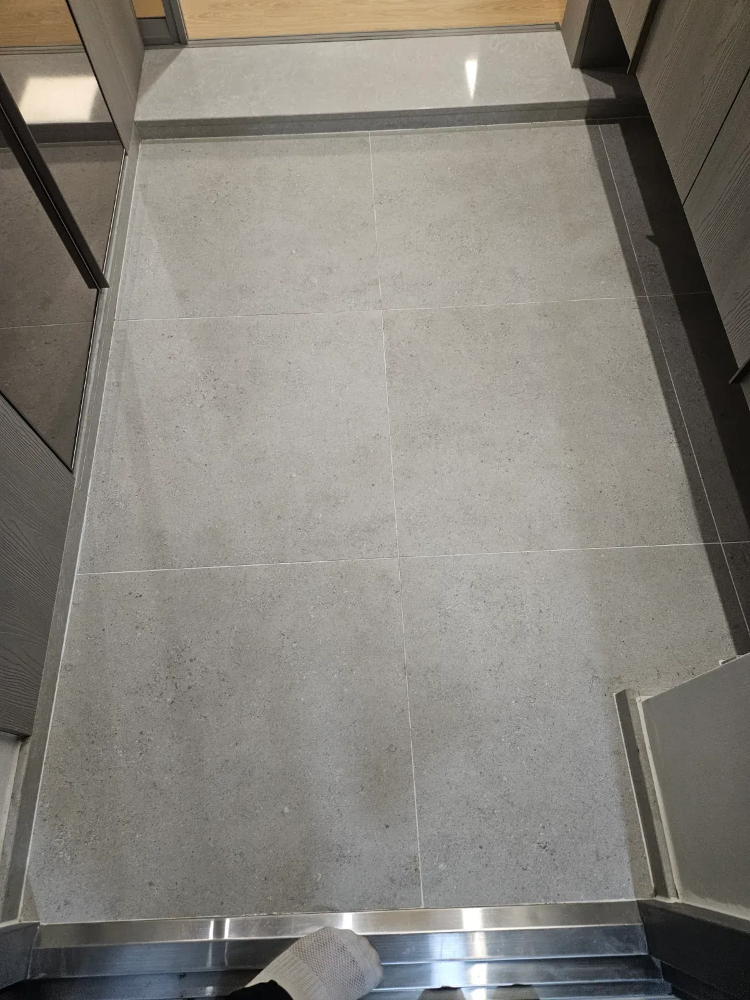
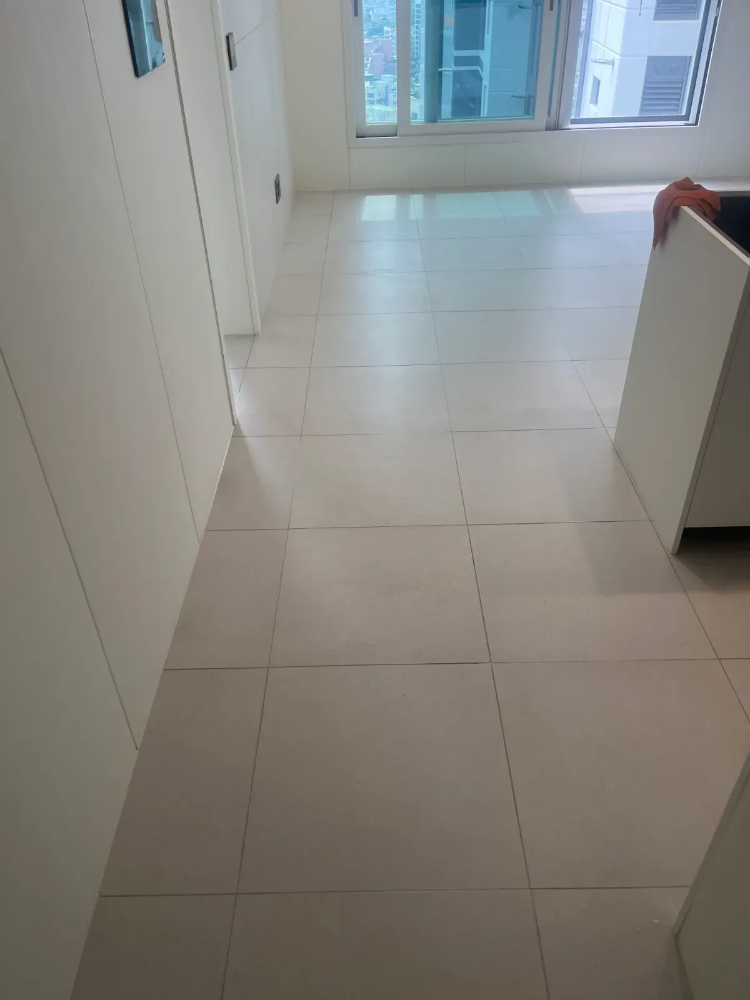
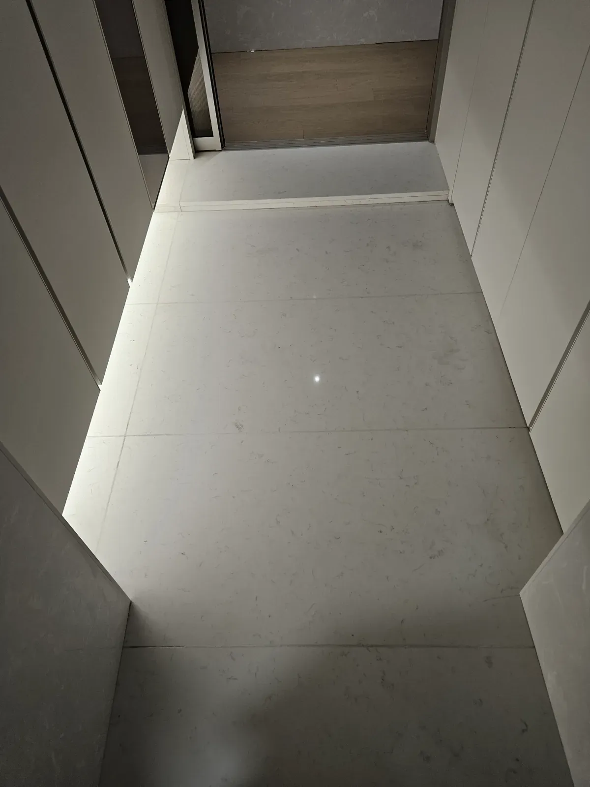
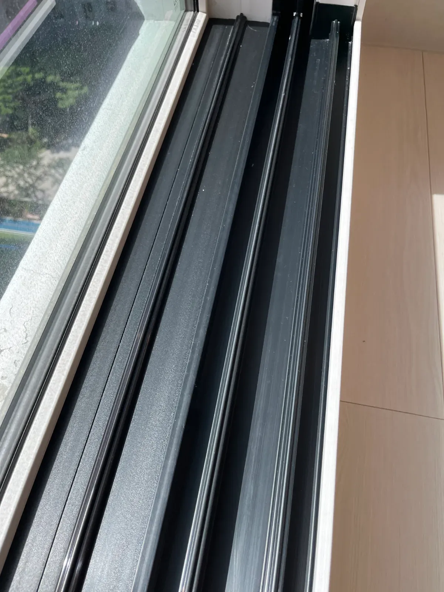
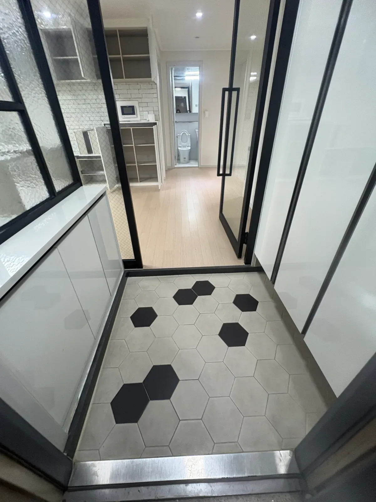
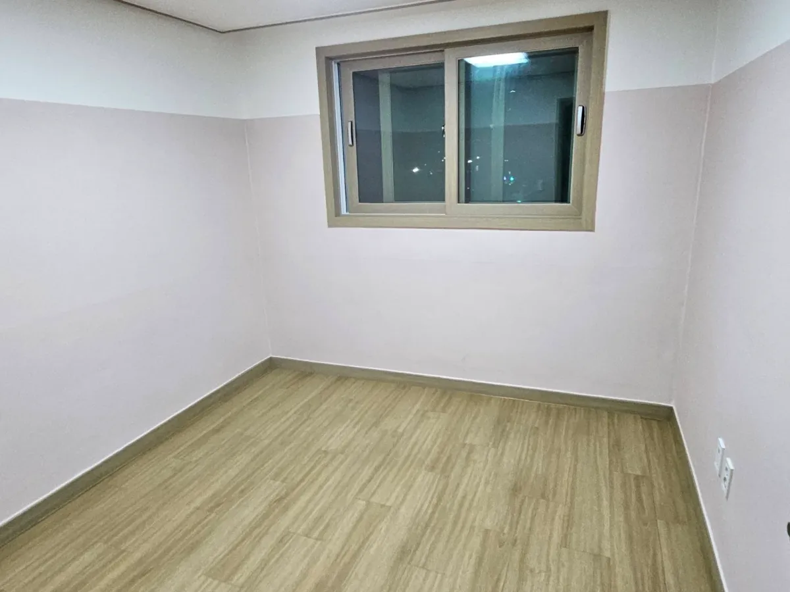
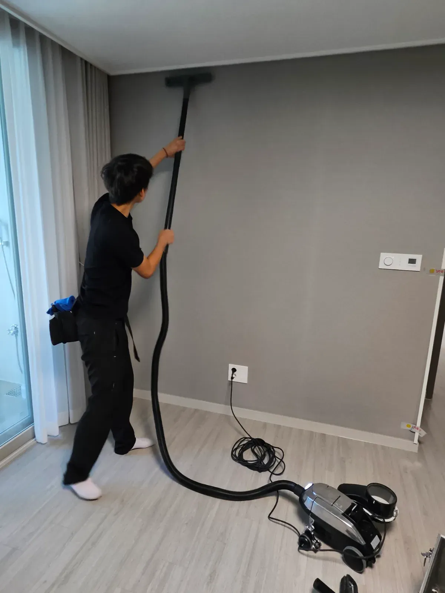
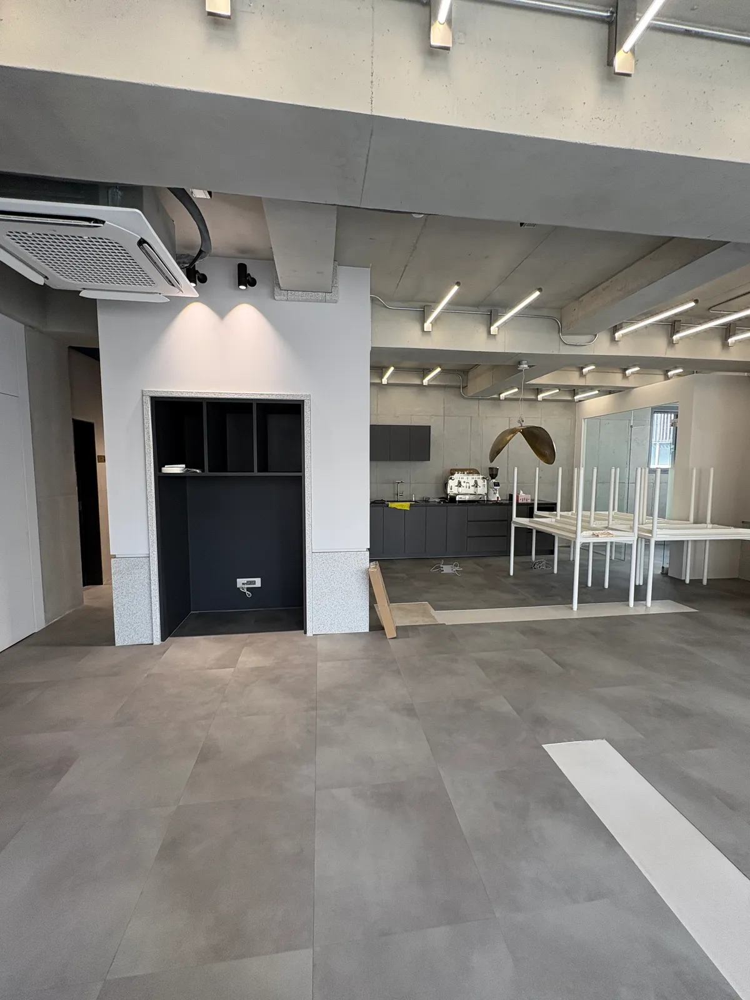

시공 사례
실제 현장의 전·후를 그대로 기록합니다.

이사청소
[평택 이사청소] 뉴비전엘크루 25평, 창틀 찌든 때와 벽 곰팡이까지 잡은 후기
이사청소는 그냥 쓸고 닦는 청소가 아닙니다.
2026. 8. 24.

인테리어 후 청소
[은평 인테리어청소] 자이더스타 25평, 시공분진과 사방에 흩뿌려진 자재까지 잡은 입주청소 후기
인테리어가 갓 끝난 집은 겉보기에는 새것 같지만 속은 전혀 다릅니다.
2026. 8. 19.

인테리어 후 청소
[반포 인테리어 후 청소] 래미안 트리니원 40평, 온 집 안 분진과 정리 안 된 자재 후기
인테리어가 끝난 직후의 집은 겉으로는 완성돼 보이지만 속은 그렇지 않습니다.
2026. 8. 17.

입주청소
[서초구 입주청소] 메이플자이 아파트 25평, 인테리어 분진과 창틀 이물질까지 잡은 후기
인테리어 직후의 집은 깨끗해 보이지만 실상은 다릅니다.
2026. 8. 13.

이사청소
[노원구 이사청소] 하계2차현대, 창틀 묵은때·환풍구 기름때 + 후기
입주를 앞두고 이전 거주 흔적을 완전히 지워야 하는 집이었습니다.
2026. 8. 12.

이사청소
[오산 갈곶동 이사청소] 갈곶동 20평 복층, 주방 하수구 음식물 찌든때와 후드 필터 기름때까지 후기
입주를 앞둔 집은 겉으로는 정리가 된 듯 보였습니다.
2026. 8. 7.

이사청소
[안양 이사청소] 두산 위브 인덕원센트렐 28평, 담배 찌든 환풍구와 곰팡이 낀 창틀 후기
이사짐이 어느 정도 들어와 있는 상태에서 진행한 이사후청소였습니다.
2026. 8. 3.

이사청소
[평택 이사청소] 화양 힐스테이트 84타입, 이사 먼지와 미흡했던 이전 청소까지 다시 잡은 후기
이삿짐이 유난히 많았던 현장이었습니다.
2026. 7. 30.

상가청소
[강남 상가청소] 논현동 사무실 25평, 시공 분진과 흙먼지 범벅 입주청소 후기
오랫동안 사무실로 쓰이다 방치됐던 공간이었습니다.
2026. 7. 27.